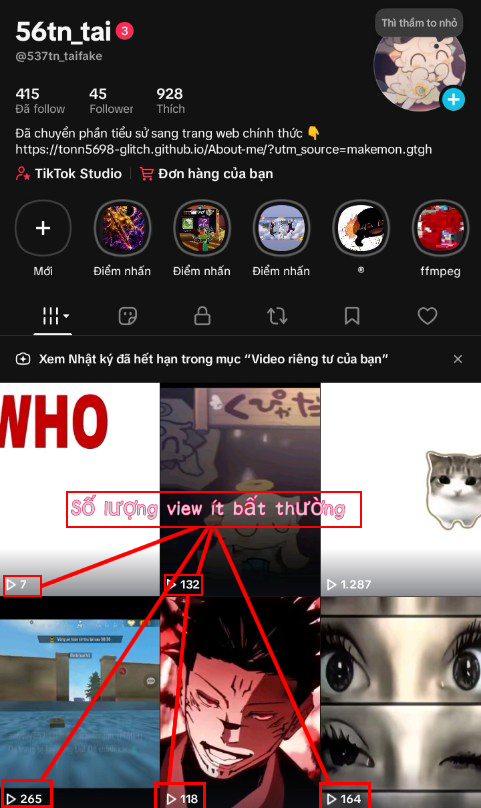

Sau một khoảng thời gian hoạt động liên tục, đặc biệt khi đăng tải nhiều video trong thời gian ngắn hoặc có những hành vi mà hệ thống đánh giá là bất thường, TikTok có thể tạm thời giảm mức độ phân phối nội dung của một tài khoản.

Minh họa một tài khoản gặp hiện tượng View Cooldown với lượng phân phối giảm bất thường.
Trong một số trường hợp, hệ thống tự động của TikTok có thể nhận diện nhầm tài khoản như một bot hoặc tài khoản có hành vi spam. Khi điều này xảy ra, các video mới vẫn được đăng thành công nhưng gần như không được đề xuất lên mục For You, khiến lượng người tiếp cận giảm đáng kể.
Người dùng thường nhận thấy các dấu hiệu như:
Hiện tượng này thường được cộng đồng gọi là "Shadowban". Đây không phải là thuật ngữ chính thức của TikTok mà là cách gọi để mô tả giai đoạn tài khoản có phạm vi phân phối bị hạn chế. Thời gian kéo dài có thể khác nhau tùy từng tài khoản và không có mốc cố định.
Trong thời gian này, nhiều người lựa chọn giảm tần suất đăng video hoặc tạm dừng hoạt động để hệ thống có thời gian đánh giá lại tài khoản. Tuy nhiên, TikTok chưa công bố chính thức rằng việc "nghỉ đăng" sẽ chắc chắn khôi phục phạm vi phân phối, vì vậy đây chỉ là kinh nghiệm được nhiều người chia sẻ.